Conheça os habitantes que tornam essa aventura ainda mais especial

Líder carinhosa que acredita na união e em transformar a ilha em um lugar mais feliz 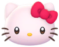 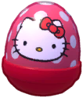
Doce e sonhadora, ama música e confeitaria, espalhando gentileza 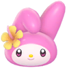 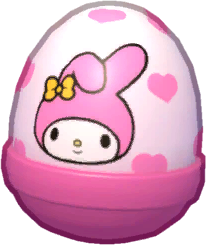
Travessa e misteriosa, usa artes místicas e ama explorar segredos da ilha 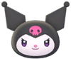 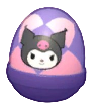
Energético e amante da natureza, cuida dos animais e da reserva 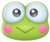 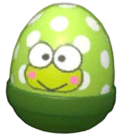
Descolado e provocador, ama desafios, pesca e diversão 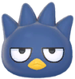 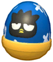

Calmo e amigável, adora descansar e aproveitar momentos simples 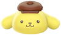 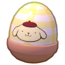
Tímido e gentil, ajuda todos voando com suas orelhas enormes
 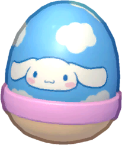
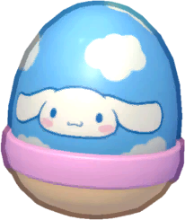
Elegante e simpático, ajuda nos negócios e no estilo da ilha 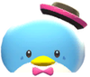 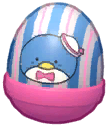
Aventureiro dos mares, explora tesouros e mistérios subaquáticos
 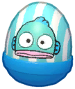
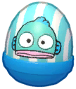
Forte e determinada, encara ambientes difíceis e nunca desiste 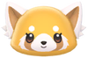 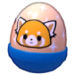

Gudetama é preguiçoso, desmotivado e adora descansar 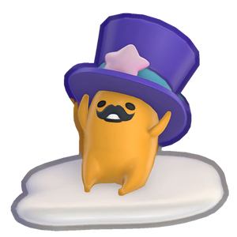 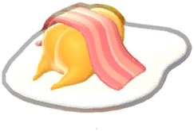
Ativo e curioso, ama esportes e explorar novos lugares 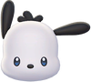 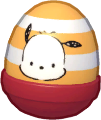
Inteligente e curioso, adora inventar e resolver enigmas 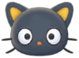 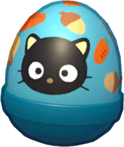
Alguns amigos ainda estão esperando para serem desbloqueados!
Explore, complete missões e descubra novos personagens mágicos para a sua jornada
Doce e sonhadora, inspira esperança e amizade 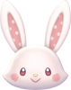 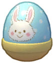
Meiga e musical, traz calma com suas melodias 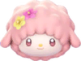 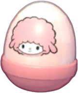
Misterioso e observador, aparece com itens inesperados 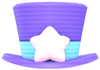 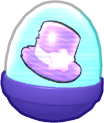
Representa a superação e o valor dos desafios


Gêmeos mágicos que espalham luz, amizade e esperança  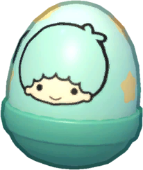 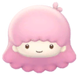 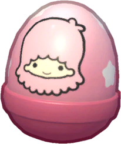
Pequena e tímida, mas cheia de uma força que ninguém vê de primeira
Alegre e cheia de cor, Usahana dança em direção aos seus sonhos